Background. Cancers are often found late because early symptoms and mildly abnormal blood tests are individually vague. Clinical guidelines such as the UK's NICE NG12 list symptom-and-test combinations that justify a prompt check, but they are written for clinicians and are hard for a person with a lab report in hand to apply. We built a patient-facing navigator that applies those rules, and measured what it does on real people before anyone relies on it.
Methods. The navigator is a rule engine, not a trained model: 34 rules transcribed from the 2015 edition of NG12, each with its source page, evaluated with three-valued logic so that missing facts are requested rather than assumed. We ran the engine on 37,915 adults aged 40 and over from NHANES III (1988-1994) and ten continuous NHANES cycles (1999-2018), linked to the National Death Index through 2019. Six questions and their pass-or-fail bars were committed to the repository before the analysis. Outcomes were burden of alerts, cancer-specificity among decedents, added value over age and sex in an unseen era, validity of the tool's own iron-deficiency assumption against measured ferritin, and calibration of an age, sex and smoking context layer. Reading level was measured for every sentence the tool can show.
Results. Lab results alone alerted 12% to 17% of people aged 70-79 and 16% to 27% of those 80 and over, almost entirely through the guideline's anaemia-to-stool-test rule, and no more than 2.7% in any age band were told to see a doctor soon. Three of the four bars with a pass-or-fail criterion were missed. Among people who died, alerted people were not more likely to have died of cancer (adjusted odds ratio 0.74 (0.63 to 0.88) in 1999-2014; 1.18 (0.91 to 1.54) in NHANES III). Adding the alert to age and sex did not improve prediction of five-year cancer death in the held-out era (AUC gain +0.005, 95% CI -0.009 to +0.019; age and sex alone gave AUC 0.73). The tool's assumption that small red cells indicate iron deficiency had sensitivity 65% and positive predictive value 71% against measured ferritin, and overstated "see a doctor soon" alerts by 47% in people aged 60 and over. The context layer was well calibrated in a later era (slope 0.92). Patient-facing text averaged US grade 6.9.
Conclusions. The navigator applies a published guideline faithfully and readably, but its lab-driven alerts do not carry information about who will die of cancer beyond age and sex. It should therefore be presented as a way of reading a guideline, not as a risk predictor, and lab-only alerts should be worded as questions for a doctor. The tool is not clinician-reviewed and the rules are UK guidance from 2015; clinician validation is the necessary next step.
A person who has had routine bloodwork usually learns one thing from it: which numbers fall outside a printed range. A blood count and a metabolic panel together produce about thirty values, and what matters in early cancer detection is rarely one of them being wrong. It is a small abnormality in a blood count, alongside a symptom the person has not thought to mention, alongside their age and smoking history. Doctors weigh these together. The person holding the report generally cannot.
Two bodies of work address parts of this. Clinical guidelines, most prominently the NICE guideline NG12 on suspected cancer, list the combinations of age, symptoms and test results that justify an urgent check, chosen so that the chance of cancer for someone meeting a criterion is about three percent or more.1 Statistical risk models such as QCancer combine symptoms, risk factors and blood tests into a probability.2 Both are written for clinicians. Neither is designed to be handed to a person who has a lab report and a worry and wants to know whether it is worth asking about.
Multi-cancer detection from blood alone, in people with no symptoms, is a harder and still unresolved problem. Earlier work in this project built and tested several blood-only panels and withdrew most of them when they failed bars set in advance; the lesson was that routine blood values add little to age and sex for cancer outcomes in the general population. The route that remains well supported is narrower: people who already have a reason to be looking, such as a symptom, where guidelines already define who deserves a prompt check.
This paper describes a navigator for that case and, more importantly, measures it. The questions are practical ones. How many people would the lab rules alert if used without symptoms? Are the alerts specific to cancer, or do they mark ill health in general? Do they add to what age and sex already tell us? Is the tool's own simplifying assumption sound? Can an ordinary reader follow what it says? We committed the questions and the pass-or-fail criteria to the repository before looking at results. Most of them failed, and we report that as the main finding.
This is a development and retrospective evaluation study. No participant was contacted. All data are public, de-identified US survey records; the study is therefore not human-subjects research under the usual definitions, though the institution's own determination is being sought before any comprehension testing with readers (Section 4.5).
The navigator (backend/navigator.py) reads a request containing age, sex, smoking and asbestos history, a list of symptoms the person has ticked (with how often, where a rule needs it), lab values,
and optional findings such as a positive stool test. It evaluates 34 rules held in a plain data file (backend/navigator_rules.json) that a clinician can read without reading code. The rules were
transcribed from the full NICE NG12 guideline (2015 edition), and every rule records its source page. The engine contains no clinical wording of its own: the action text and the criteria shown to the user come from the file.
Three-valued logic. Every condition evaluates to true, false or unknown. A rule that could apply if one more fact were known is reported as "could apply if", naming exactly what is needed, and is not counted as a match. A missing smoking history or an unentered haemoglobin is therefore asked for and never assumed. Impossible inputs (such as a haemoglobin of 40 g/dL) are refused.
Alert levels. The guideline gives each recommendation a timeframe and a strength. These map to three levels: see a doctor soon (urgent or two-week criteria that are recommended), worth raising and mention at a routine visit. For a given cancer site only the highest level that applies is shown. The tool never states that a person has cancer, and a result of "no threshold met" is worded as different from "nothing is wrong".
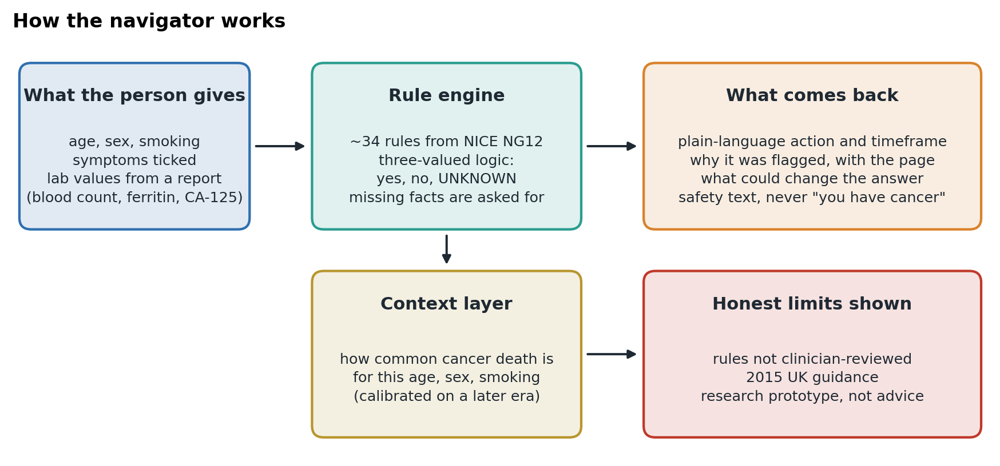
| Cancer site | Rules | Alert levels it can produce |
|---|---|---|
| Anal cancer | 1 | worth raising |
| Bladder cancer | 2 | talk soon, mention |
| Bowel cancer | 4 | talk soon, worth raising |
| Breast cancer | 3 | talk soon, worth raising, mention |
| Kidney cancer | 1 | talk soon |
| Leukaemia | 3 | talk soon, worth raising |
| Lung cancer | 3 | talk soon, worth raising |
| Lymphoma | 2 | worth raising |
| Mesothelioma | 1 | talk soon |
| Oesophageal or stomach cancer | 3 | talk soon, mention |
| Ovarian cancer | 4 | worth raising |
| Pancreatic cancer | 2 | talk soon, worth raising |
| Prostate cancer | 2 | talk soon, mention |
| Several cancers | 2 | talk soon |
| Melanoma | 1 | talk soon (7-point checklist) |
34 rules in total. Each carries its source page in the guideline. Levels come from the guideline's own timeframe and wording ('recommended' versus 'consider').
Raw lab values are converted into the findings the rules read (Table 2). Iron deficiency uses ferritin when it is entered. When it is not, the engine assumes iron deficiency from small red cells (MCV below 80 fL), and says so. Question 4 below tests how reasonable that assumption is.
| Derived finding | Definition used | Where it comes from |
|---|---|---|
| Anaemia | Haemoglobin below 13 g/dL (male) or 12 g/dL (female) | WHO definition for adults |
| Iron deficiency | Ferritin below 15 ng/mL. If no ferritin, MCV below 80 fL is used instead and the person is told so | Common laboratory cut-off; MCV rule is the tool's disclosed assumption |
| Iron-deficiency anaemia | Anaemia and iron deficiency together | Derived |
| Thrombocytosis | Platelets above 400 x10^9/L | Guideline |
| Raised white count | White cells above 11 x10^9/L | Common laboratory cut-off |
| Raised CA-125 | 35 U/mL or more | Guideline |
NHANES is a continuing US national survey with a physical examination and laboratory tests. NCHS links participants to the National Death Index, giving vital status and underlying cause of death through 31 December 2019. We used NHANES III and ten continuous cycles; cycles examined in 2015-2018 have under five years of follow-up for many people and so were used only for questions that need no outcome (Table 3). Participants who reported a previous cancer diagnosis were excluded where the questionnaire asked, and nobody was excluded for how they later died, a choice learned from an earlier cohort in this project that dropped everyone who died of another cause and thereby made every early death a cancer death. The outcome is death from cancer (NCHS underlying cause 2) within 60 months of the examination: a later and harsher endpoint than diagnosis, and one that cannot show whether an alert would have led to a correct referral.
| Source | Years | Adults 40+ with a blood count | Used for |
|---|---|---|---|
| NHANES III, linked to the National Death Index | 1988-1994 | 9,335 | Burden; cancer specificity; added value (external era) |
| Continuous NHANES, eight cycles with five-year follow-up | 1999-2014 | 22,583 | All questions; context layer |
| Continuous NHANES, two newest cycles | 2015-2018 | 5,997 | Burden and ferritin check only (follow-up too short) |
| Total | 1988-2018 | 37,915 |
NHANES: US National Health and Nutrition Examination Survey. Mortality follow-up through 31 December 2019 from the NCHS public-use linked mortality files.
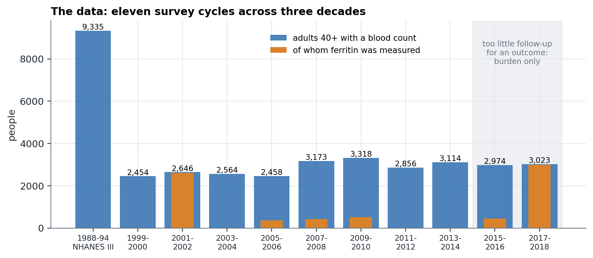
The real engine was run, not a re-implementation. Two versions were scored for every person. Labs only passed haemoglobin, MCV, platelets, white count and (where measured) ferritin, with no symptoms and no smoking history. Labs plus proxies added smoking (100 or more cigarettes in a lifetime) and three symptom stand-ins, passed only when present: weight loss (weight a year ago minus weight now of at least 5% of the earlier weight and not trying to lose weight, or at least 10% where that question was not asked), chronic cough (cough on most days for three months, asked 1999-2012) and breathlessness (asked of people 40 and over). NHANES never asked about bleeding, lumps, bowel change, appetite, tiredness or jaundice, so most of the guideline's symptoms are invisible here, and every alert rate below is a lower bound on what someone reporting those symptoms would see. The proxies are crude: weight loss in a survey includes illness and medication effects that a person ticking "no known reason" would exclude.
Six questions and their criteria were committed before analysis (docs/NAVIGATOR_EVIDENCE_PREREG.md) and are summarised with the results in Table 4. The earlier project had repeatedly found that results look better when the comparison is weak, so every prediction question uses age and sex as the baseline, and cancer specificity is tested only among people who died, so that "sick people die of things" cannot masquerade as a cancer signal.
Proportions use Wilson 95% intervals.3 Cancer specificity among decedents (deaths within ten years of examination) used logistic regression of cancer versus other cause on the flag, age, age squared, sex and examination year, with Wald intervals. Added value used logistic models of five-year cancer death with age, age squared and sex, with and without the alert, fitted on 1999-2006 and tested on 2007-2014 (and, exploratorily, fitted on 1999-2014 and tested on NHANES III); the AUC difference was bootstrapped 1,000 times, resampling cases and non-cases separately. Non-cancer deaths inside the window are counted as non-cases, which is a competing-risk simplification. All analyses are unweighted, because the aim was to exercise the engine on realistic profiles, not to estimate a national prevalence.
To answer "how much of this is just my age", the tool reports how common five-year cancer death is among US adults of the same age, sex and smoking history: a logistic model of age, age squared, sex and smoking, fitted on 1999-2006 and tested on 2007-2014 (bar: calibration slope between 0.8 and 1.2), then refitted on all outcome cycles for use in the tool. It does not use labs or symptoms and is shown as a group average, not the person's risk.
Every sentence the tool can show was scored with the Flesch-Kincaid grade level.4 The bar, set before the first measurement, was a mean of at most 8 and no action line above 10. This is a floor and not a test of understanding.
Backend: Python and FastAPI; frontend: Next.js, deployed publicly. There are 79 automated tests, including properties such as "a symptom-free person with normal labs is never told to see a doctor soon over 300 random profiles", "the tool never says 'you have cancer'" and "a rule that refers to a symptom the form cannot ask about is a loud failure". Every number in this paper is regenerated by scripts in the repository, and the tables and figures are built directly from their output. Reporting follows the spirit of TRIPOD+AI where it applies;5 because the engine is not a trained model there is no training-set leakage to guard against in the rules themselves, only in the context layer, which is validated out of era.
| # | Pre-registered question and bar | Result | Outcome |
|---|---|---|---|
| 1 | Burden is stable across eras: 'see a doctor soon' at most 3% and any alert at most 20% in every age band and era | Worst 'soon' 2.7%; worst any-alert 26.7% (age 80+, 2015-2018) | Missed (any-alert, ages 80+) |
| 2 | Alerted people are more likely to die of cancer than of something else, among decedents (adjusted OR interval above 1 in 1999-2014, and OR above 1 in NHANES III) | 1999-2014: OR 0.74 (0.63 to 0.88). NHANES III: OR 1.18 (0.91 to 1.54) | Missed |
| 3 | An alert adds to age and sex for five-year cancer death in the held-out era (AUC-gain interval excludes 0) | Labs and proxy symptoms: +0.005 (-0.009 to +0.019); labs only +0.000 | Missed |
| 4 | Report how well MCV below 80 stands in for ferritin (no bar) | Sensitivity 65%, PPV 71% | Reported |
| 5 | Which rules fire (no bar) | Colorectal rules account for almost all lab-driven alerts | Reported |
| 6 | Age, sex and smoking context layer is calibrated in a later era (slope 0.8 to 1.2) | Slope 0.92; AUC 0.747 | Met |
Bars were committed to the repository before the analysis was run (docs/NAVIGATOR_EVIDENCE_PREREG.md).
With lab results alone and no symptoms, the share of adults alerted rises steeply with age (Table 5, Figure 3): about 4% to 8% at 40-49, 1% to 2% at 50-59, and 16% to 27% at 80 and over. The pattern is close to identical in all four eras, spanning thirty years of laboratory methods. "See a doctor soon" stayed at or below 2.7% in every band and era, and is zero below age 60.
Almost every lab-driven alert comes from one guideline rule: anaemia in people 60 or over, or iron-deficiency anaemia under 60, leads to a stool test. In the two newest cycles, where ferritin was measured for most people, this rule alerted 13.7% of women but 1.6% of men aged 40-49, a difference consistent with menstrual iron loss, which the rule does not take into account. That is a real feature of the guideline applied to people who may have a benign explanation. The pre-registered 20% line for any alert was crossed only at age 80 and over, in three of the four eras (21%, 23% and 27%).
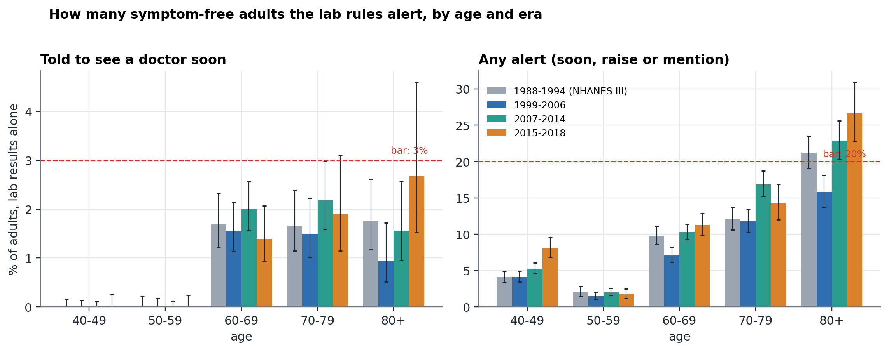
| Era | Age | Adults | See a doctor soon | Any alert (95% interval) |
|---|---|---|---|---|
| 1988-1994 (NHANES III) | 40-49 | 2,414 | 0.0% | 4.1% (3.3 to 4.9) |
| 50-59 | 1,746 | 0.0% | 2.1% (1.5 to 2.8) | |
| 60-69 | 2,183 | 1.7% | 9.8% (8.6 to 11.1) | |
| 70-79 | 1,683 | 1.7% | 12.1% (10.6 to 13.7) | |
| 80+ | 1,309 | 1.8% | 21.2% (19.1 to 23.5) | |
| 1999-2006 | 40-49 | 2,932 | 0.0% | 4.1% (3.5 to 4.9) |
| 50-59 | 2,138 | 0.0% | 1.5% (1.0 to 2.1) | |
| 60-69 | 2,388 | 1.6% | 7.1% (6.1 to 8.2) | |
| 70-79 | 1,597 | 1.5% | 11.8% (10.3 to 13.5) | |
| 80+ | 1,067 | 0.9% | 15.8% (13.8 to 18.1) | |
| 2007-2014 | 40-49 | 3,565 | 0.0% | 5.3% (4.6 to 6.1) |
| 50-59 | 3,187 | 0.0% | 2.0% (1.6 to 2.6) | |
| 60-69 | 3,046 | 2.0% | 10.3% (9.2 to 11.4) | |
| 70-79 | 1,701 | 2.2% | 16.9% (15.2 to 18.7) | |
| 80+ | 962 | 1.6% | 22.9% (20.3 to 25.6) | |
| 2015-2018 | 40-49 | 1,522 | 0.0% | 8.1% (6.8 to 9.6) |
| 50-59 | 1,575 | 0.0% | 1.7% (1.2 to 2.5) | |
| 60-69 | 1,657 | 1.4% | 11.3% (9.8 to 12.9) | |
| 70-79 | 793 | 1.9% | 14.2% (12.0 to 16.9) | |
| 80+ | 450 | 2.7% | 26.7% (22.8 to 30.9) |
Lab results alone, no symptoms entered. Intervals are Wilson 95% intervals.
No. Among the 3,864 people in 1999-2014 who died within ten years, those alerted by labs alone were less likely to have died of cancer than of something else (13.5% versus 21.7%; adjusted odds ratio 0.63 (0.49 to 0.80)). Adding the proxy symptoms moved the estimate to 0.74 (0.63 to 0.88). The result did not replicate in direction in NHANES III (1.18 (0.91 to 1.54), interval including 1). In no era did an alert identify cancer deaths.
Looking at one flag at a time (Table 7, Figure 4; exploratory), anaemia was the clearest: among decedents, anaemic people had about 40% lower odds of having died of cancer rather than another cause (OR 0.57 (0.45 to 0.72)). The proxy for weight loss and breathlessness pointed the same way. Smoking, the one flag that is not a symptom or lab, pointed the expected way (OR 1.30 (1.09 to 1.56)).
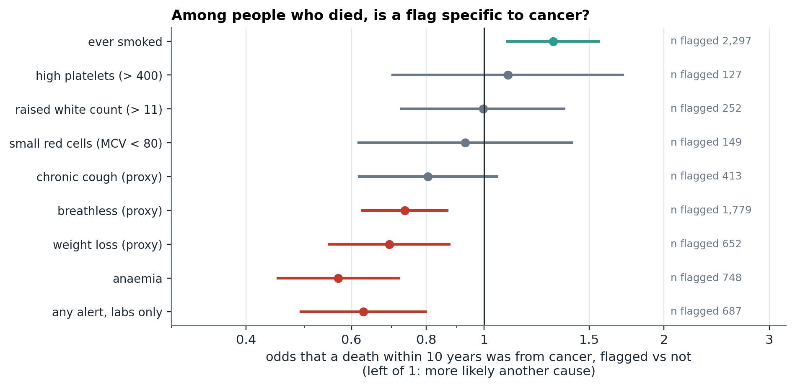
| Group | Deaths in 10 years | Alerted | Cancer share, alerted | Cancer share, not alerted | Adjusted OR (95% CI) |
|---|---|---|---|---|---|
| 1999-2014 labs only | 3,864 | 687 | 13.5% | 21.7% | 0.63 (0.49 to 0.80) |
| 1999-2014 labs and proxies | 3,864 | 2,094 | 18.5% | 22.3% | 0.74 (0.63 to 0.88) |
| NHANES III labs only | 2,324 | 400 | 23.0% | 22.4% | 1.18 (0.91 to 1.54) |
Decedents only: everyone here died within ten years, so the question is whether the death was from cancer. Adjusted for age, age squared, sex and (pooled) examination year.
| Single flag | Decedents flagged | Adjusted OR for dying of cancer rather than another cause (95% CI) |
|---|---|---|
| anaemia | 748 of 3,864 | 0.57 (0.45 to 0.72) |
| small red cells (MCV < 80) | 149 of 3,864 | 0.93 (0.62 to 1.40) |
| high platelets (> 400) | 127 of 3,864 | 1.10 (0.70 to 1.71) |
| raised white count (> 11) | 252 of 3,864 | 1.00 (0.73 to 1.36) |
| weight loss (proxy) | 652 of 3,864 | 0.69 (0.55 to 0.87) |
| chronic cough (proxy) | 413 of 3,864 | 0.81 (0.62 to 1.05) |
| breathless (proxy) | 1,779 of 3,864 | 0.74 (0.63 to 0.87) |
| ever smoked | 2,297 of 3,864 | 1.30 (1.09 to 1.56) |
| any alert, labs only | 687 of 3,864 | 0.63 (0.49 to 0.80) |
Exploratory. Nine comparisons; only intervals well away from 1 should be believed. 'Proxy' means a crude NHANES stand-in for a symptom (see Methods).
Age and sex alone predicted five-year cancer death with AUC 0.73 in the held-out era. Adding the labs-only alert changed this by +0.000 (95% CI -0.005 to +0.005); adding the alert from labs and proxy symptoms changed it by +0.005 (-0.009 to +0.019). Both intervals include zero, so the bar was missed. In the exploratory NHANES III test the gain was +0.009 (+0.005 to +0.014), statistically above zero but under one point of AUC and not in the pre-registered test.
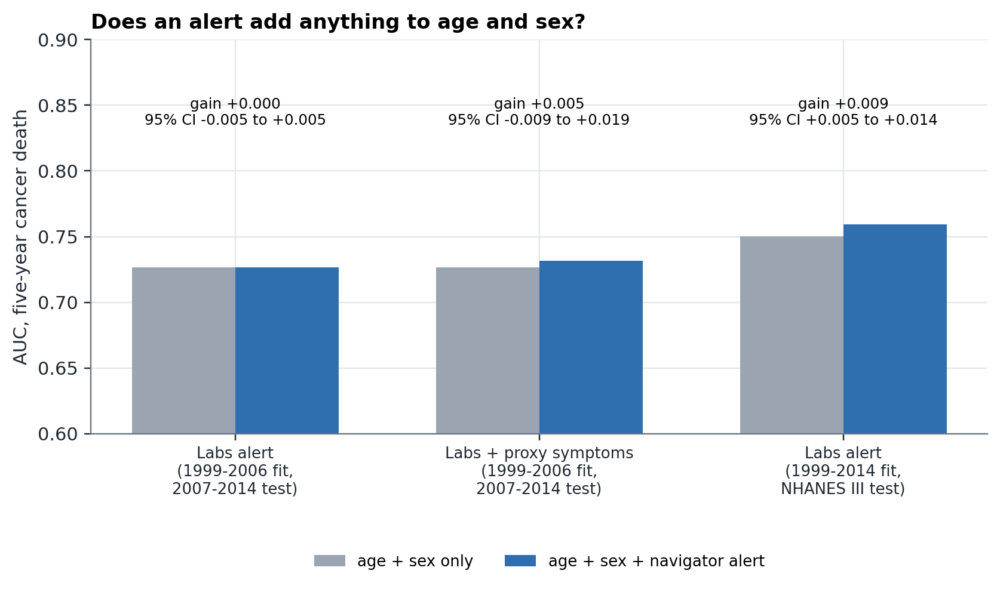
| Comparison | Test people | Cancer deaths | AUC, age + sex | AUC, with alert | Gain (95% CI) |
|---|---|---|---|---|---|
| Labs alert; fit 1999-2006, test 2007-2014 | 12,438 | 179 | 0.727 | 0.727 | +0.000 (-0.005 to +0.005) |
| Labs + proxy symptoms; fit 1999-2006, test 2007-2014 | 12,438 | 179 | 0.727 | 0.732 | +0.005 (-0.009 to +0.019) |
| Labs alert; fit 1999-2014, test NHANES III (exploratory) | 9,326 | 238 | 0.750 | 0.759 | +0.009 (+0.005 to +0.014) |
AUC: probability that a person who died of cancer within five years has a higher score than one who did not. Bootstrap intervals, 1,000 resamples.
Among 7,373 adults with a measured ferritin, 817 were anaemic and 328 of those were iron-deficient by ferritin. Using MCV below 80 as a stand-in caught 65% of them and was right 71% of the time. Among 2,743 adults 60 or over with a ferritin, the proxy told 53 to see a doctor soon where measured ferritin told 36. A person who enters ferritin gets a more accurate answer than one who does not, and the tool says which one they got.
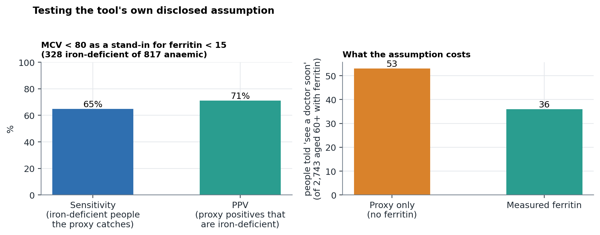
| Rule | People it fired for | Died of cancer within 5 years | Mean age |
|---|---|---|---|
| Chest X-ray (lung) | 5,953 | 2.3% | 60 |
| Stool test for hidden blood (bowel) | 3,175 | 2.6% | 66 |
| Unexplained weight loss, several cancers | 2,520 | 1.8% | 60 |
| Consider ovarian tests | 1,446 | 1.2% | 60 |
| Urgent bowel referral | 184 | 3.3% | 70 |
| Consider chest X-ray (lung) | 127 | 0.8% | 58 |
| Consider endoscopy (stomach, gullet) | 55 | 3.6% | 69 |
| Everyone in the analysis | 22,560 | 1.5% |
Labs plus proxy symptoms, 1999-2014. Descriptive only: the groups differ in age, and a higher rate in a group is mostly its older age.
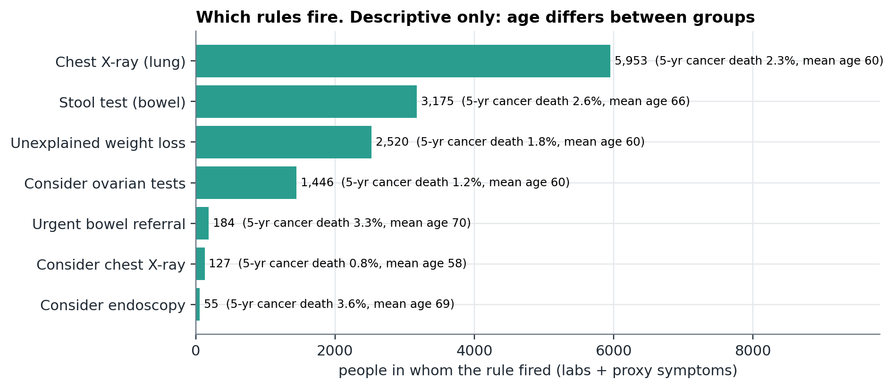
Fitted on 1999-2006 and tested on 2007-2014, the age, sex and smoking model had AUC 0.747 and a calibration slope of 0.92, inside the pre-registered 0.8 to 1.2. Its Brier score (0.01398) was slightly better than predicting the average for everyone (0.01419). The model was refitted on 24,180 adults with 379 five-year cancer deaths for use in the tool. Typical outputs range from about 2 in 1,000 for a 45-year-old woman who has never smoked to about 50 in 1,000 for a 75-year-old man who has smoked.
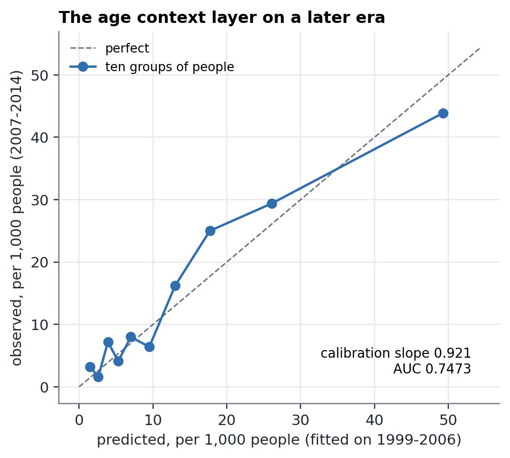
| Predicted per 1,000 | Observed per 1,000 | People |
|---|---|---|
| 1.5 | 3.2 | 1,250 |
| 2.6 | 1.6 | 1,268 |
| 3.9 | 7.2 | 1,254 |
| 5.3 | 4.1 | 1,208 |
| 7.0 | 8.0 | 1,255 |
| 9.5 | 6.4 | 1,249 |
| 13.0 | 16.2 | 1,298 |
| 17.7 | 25.0 | 1,202 |
| 26.1 | 29.4 | 1,225 |
| 49.3 | 43.9 | 1,229 |
Ten equal-sized groups of the 2007-2014 people, ordered by predicted risk, from a model fitted only on 1999-2006.
Patient-facing action and headline lines averaged US grade 6.9, with none over grade 10. The first measurement missed the bar: five action lines exceeded grade 10 and the emergency advice scored grade 16.5 because it was a single long sentence. After rewriting without changing meaning, the emergency advice scored grade 4.8. The remaining hard items in the table are one-word symptom labels, where the formula over-scores.
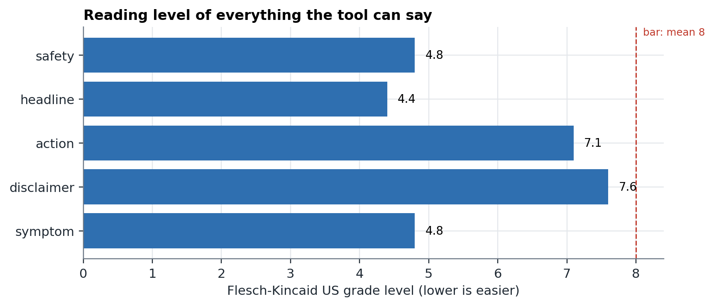
| Text the tool can show | Items | Mean US grade | Hardest item | Over grade 10 |
|---|---|---|---|---|
| Action | 34 | 7.1 | 9.1 | 0 |
| Headline | 2 | 4.4 | 5.8 | 0 |
| Safety | 2 | 4.8 | 5.3 | 0 |
| Disclaimer | 1 | 7.6 | 7.6 | 0 |
| Symptom | 53 | 4.8 | 32.0 | 5 |
Flesch-Kincaid grade level. 'Symptom' items are one-line labels, where the formula over-scores very short sentences; five of them exceed grade 10 for that reason only.
Figures 10 and 11 are screenshots of the deployed application. The case entered is invented for illustration: a 66-year-old man who has smoked, with unexplained weight loss and a blood count showing iron-deficiency anaemia.
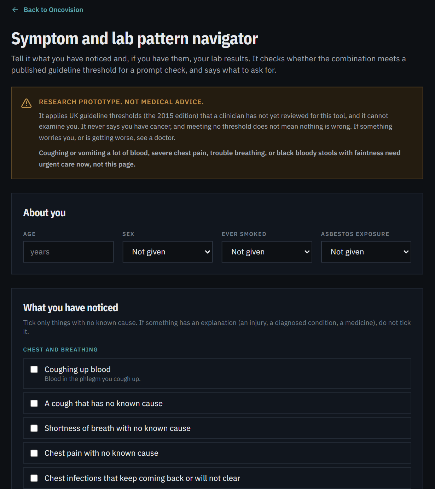
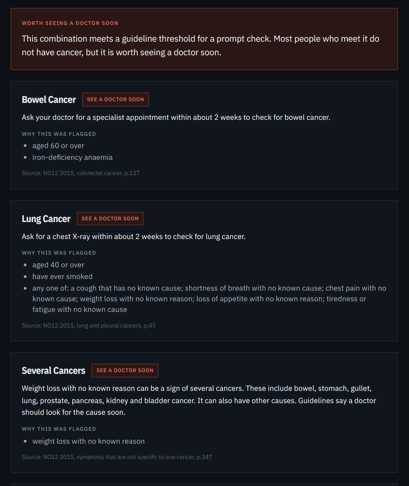
The navigator did what it was designed to do. It applied a published guideline to a person's facts, asked for what was missing, explained each alert with the page it came from, and did so at a reading level most adults can follow. It did not do something it was never designed to do and that a patient-facing tool might be mistaken for: it did not identify who would die of cancer. This distinction is the main lesson. The NG12 criteria are thresholds for looking, set so that the chance of finding cancer is about three percent or more among people who have already come to a doctor with a symptom. Applied to symptom-free people using only their lab values, the same thresholds mostly flag the common conditions that cause anaemia and raised white counts.
The decedent-only result needs careful reading. It does not show that anaemia protects against cancer death, and it does not show the guideline is wrong. Anaemia is common in people dying of kidney, heart and lung disease, and in a general-population sample those causes of death are far more common than cancer. Whether an alerted person who then received a stool test or a colonoscopy would have had a bowel cancer found is not something death records can show. What the result does show is that a tool which presents lab-only alerts as a signal of cancer would mislead.
The context layer is the other practical result. Age and sex alone give an AUC of about 0.73 for five-year cancer death, and nothing the navigator adds changes that appreciably. Showing a person what is ordinary for their age is cheap, calibrated and, we believe, useful for reading an alert in proportion; whether it helps or alarms people is a question for readers, not for this data.
Lab-only alerts now carry a note that common causes are not cancer and that, in a US survey, these findings did not help tell who later died of cancer once age and sex were known. A lower-tier alert for a cancer site is no longer shown beside a higher-tier one. The context layer was added to the tool because its bar was met. A rule defect found along the way (asbestos wording shown to a smoker without exposure) was fixed and recorded. These changes are listed as deviations in the pre-registration, which was committed before the first analysis.
QCancer-style models report AUCs of roughly 0.84 to 0.88 for cancer when symptoms, risk factors and blood tests are combined in primary-care records.2 Those models use a much richer symptom set and diagnoses as the outcome; the figures are not comparable with an AUC for cancer death in a survey, and we make no claim to match them. The navigator's different contribution is access: a person can enter a lab report and symptoms, see why an alert arose in the guideline's own words, and read a plain-language answer. We have not verified that no similar patient-facing tool exists, and the novelty claim should be checked before it is made.
review_status: not yet reviewed, and the tool shows this to every user. Transcription errors are possible. A design decision that departs from the guideline text (gating the lung "consider chest X-ray" thrombocytosis path behind at least one symptom, because applied literally it alerted 3.7% of symptom-free adults over 40) needs a clinician's confirmation.A guideline-based navigator can be built, can be made readable, and can be tested against bars set in advance. In this test it applied the guideline as written and produced a stable, modest alert burden. Its lab-driven alerts did not identify who would die of cancer, three of its four pass-or-fail bars were missed, and the paper says so. The honest claim is therefore a modest one: the navigator is a faithful, readable way to apply a published referral guideline, accompanied by a calibrated statement of how common cancer death is for a person's age, and it should not be presented as a detector. Whether it helps real people reach a diagnosis sooner is untested.
This project was developed with the assistance of an AI model (Anthropic Claude, Sonnet and earlier versions, via Claude Code). The AI was used to write and test code, to run analyses, to draft text, and to search for background literature. An AI cannot be an author. The human author is responsible for the work, reviewed the results, and must verify every statement and reference before submission; the references listed here were written from the author's and the assistant's knowledge of the literature and have not yet been checked against the originals.
The analyses use public, de-identified records and involve no contact with participants. Any study recruiting readers or patients will need an ethics determination first.
Code, rules, tests, pre-registration and all result files are in the public repository (github.com/palashraks-afk/OncoVision). NHANES data are public from the US National Center for Health Statistics; the linked mortality files are public-use. The navigator is deployed at oncovisionai.vercel.app/navigator.
Clinical mentorship is being sought from Dr. Rishikesh Chavan (UCI Health / CHOC). His role, review of the rules and authorship status are to be agreed with him and are not asserted here.
None declared. No funding.
The navigator is a research prototype and is not medical advice. A person who is worried about a symptom should see a doctor and should seek urgent care for severe symptoms regardless of what the tool says.
All references are to be checked against the originals before submission.
The full rule file, with every criterion and source page, is backend/navigator_rules.json. A reviewing clinician can read it directly. Each rule's action text, as the tool shows it to a person, is listed below with its source page; the criteria behind each are in the file.
| Rule | Site | Level | What the tool tells the person | Source |
|---|---|---|---|---|
| lung_haemoptysis | lung cancer | talk soon | Ask your doctor for a specialist appointment within about 2 weeks to check for lung cancer. | NG12 2015, lung and pleural cancers, p.45 |
| lung_xray_symptoms | lung cancer | talk soon | Ask for a chest X-ray within about 2 weeks to check for lung cancer. | NG12 2015, lung and pleural cancers, p.45 |
| lung_xray_consider | lung cancer | worth raising | Ask your doctor if a chest X-ray within about 2 weeks is worth doing. | NG12 2015, lung and pleural cancers, p.45 |
| meso_xray_symptoms | mesothelioma | talk soon | Ask for a chest X-ray within about 2 weeks. Doctors check for mesothelioma when these symptoms come with asbestos exposure. | NG12 2015, lung and pleural cancers, p.49 |
| upper_gi_urgent | oesophageal or stomach cancer | talk soon | Ask for a camera test of the gullet and stomach (an endoscopy) within about 2 weeks. | NG12 2015, oesophageal and stomach cancers, pp.62 and 84 |
| upper_gi_haematemesis | oesophageal or stomach cancer | mention | Tell a doctor. A non-urgent endoscopy may be considered. Vomiting a lot of blood is an emergency: seek care now. | NG12 2015, oesophageal and stomach cancers, pp.62 and 84 |
| upper_gi_consider | oesophageal or stomach cancer | mention | Ask whether a non-urgent endoscopy is worth doing. | NG12 2015, oesophageal and stomach cancers, pp.62 and 84 |
| pancreas_jaundice | pancreatic cancer | talk soon | Ask your doctor for a specialist appointment within about 2 weeks. | NG12 2015, pancreatic cancer, p.71 |
| pancreas_scan | pancreatic cancer | worth raising | Ask whether an urgent scan (CT, or ultrasound if CT is not available) is worth doing. | NG12 2015, pancreatic cancer, p.71 |
| colorectal_urgent | bowel cancer | talk soon | Ask your doctor for a specialist appointment within about 2 weeks to check for bowel cancer. | NG12 2015, colorectal cancer, p.137 |
| colorectal_mass | bowel cancer | worth raising | Ask your doctor if you need a specialist appointment within about 2 weeks. | NG12 2015, colorectal cancer, p.137 |
| colorectal_young_bleeding | bowel cancer | worth raising | Ask your doctor if you need a specialist appointment within about 2 weeks. | NG12 2015, colorectal cancer, p.137 |
| colorectal_stool_test | bowel cancer | worth raising | Ask for a stool test for hidden blood. | NG12 2015, colorectal cancer, p.137 |
| anal_mass | anal cancer | worth raising | Ask your doctor if you need a specialist appointment within about 2 weeks. | NG12 2015, anal cancer, p.144 |
| breast_urgent | breast cancer | talk soon | A doctor should arrange an urgent breast clinic appointment (within about 2 weeks). | NG12 2015, breast cancer, p.155 |
| breast_consider | breast cancer | worth raising | Ask whether an urgent breast clinic appointment (within about 2 weeks) is needed. | NG12 2015, breast cancer, p.155 |
| breast_young_lump | breast cancer | mention | Ask for a non-urgent referral to have the lump checked. | NG12 2015, breast cancer, p.155 |
| ovarian_symptoms | ovarian cancer | worth raising | Ask for a CA-125 blood test. These symptoms, especially after 50 and on more than about 12 days a month, are the ones doctors test for ovarian cancer. | NG12 (ovarian cancer recommendations dated 2011), p.159 |
| ovarian_ibs | ovarian cancer | worth raising | Ask for tests for ovarian cancer. Irritable bowel syndrome rarely appears for the first time at this age. | NG12 (ovarian cancer recommendations dated 2011), p.159 |
| ovarian_ca125 | ovarian cancer | worth raising | A CA-125 at or above 35 with these symptoms means an ultrasound of the abdomen and pelvis should be arranged. | NG12 (ovarian cancer recommendations dated 2011), p.159 |
| ovarian_other | ovarian cancer | worth raising | Ask whether tests for ovarian cancer are worth doing, alongside looking for other causes. | NG12 (ovarian cancer recommendations dated 2011), p.159 |
| prostate_psa | prostate cancer | talk soon | Ask your doctor for a specialist appointment within about 2 weeks. | NG12 2015, prostate cancer, p.178 |
| prostate_symptoms | prostate cancer | mention | Ask about a PSA blood test and a prostate examination. | NG12 2015, prostate cancer, p.178 |
| bladder_urgent | bladder cancer | talk soon | Ask your doctor for a specialist appointment within about 2 weeks. | NG12 2015, bladder cancer, p.189 |
| bladder_uti | bladder cancer | mention | Ask for a non-urgent referral to look for a cause of repeated urine infections. | NG12 2015, bladder cancer, p.189 |
| renal_haematuria | kidney cancer | talk soon | Ask your doctor for a specialist appointment within about 2 weeks. | NG12 2015, renal cancer, p.203 |
| leukaemia_children_blood_count | leukaemia | talk soon | Ask for a blood count within about 2 days. In children and young people these symptoms are the ones doctors check a blood count for, to look for leukaemia. | NG12 2015, leukaemia, p.256 |
| leukaemia_children_petechiae | leukaemia | talk soon | Tiny red or purple spots that do not fade under pressure in a child or young person need to be seen by a specialist straight away. Seek urgent care now. | NG12 2015, leukaemia, p.256 |
| leukaemia_adult_blood_count | leukaemia | worth raising | Ask whether a blood count within about 2 days is worth doing. Most people with tiredness or similar symptoms do not have leukaemia. | NG12 2015, leukaemia, p.256 |
| lymphoma_adult | lymphoma | worth raising | Ask your doctor if you need a specialist appointment within about 2 weeks. Fever, night sweats, breathlessness, itching, or weight loss make it more likely. | NG12 2015, non-Hodgkin and Hodgkin lymphoma, pp.274 and 280 |
| lymphoma_children | lymphoma | worth raising | Ask whether a specialist appointment within about 2 days is needed. Fever, night sweats, breathlessness, itching, or weight loss make it more likely. | NG12 2015, non-Hodgkin and Hodgkin lymphoma, pp.274 and 280 |
| weight_loss | several cancers | talk soon | Weight loss with no known reason can be a sign of several cancers. These include bowel, stomach, gullet, lung, prostate, pancreas, kidney and bladder cancer. It can also have other causes. Guidelines say a doctor should look for the cause soon. | NG12 2015, symptoms that are not specific to one cancer, p.347 |
| appetite_loss | several cancers | talk soon | Losing your appetite for no known reason can be a sign of several cancers. These include lung, gullet, stomach, bowel, pancreas, bladder and kidney cancer. It can also have other causes. Guidelines say a doctor should look for the cause soon. | NG12 2015, symptoms that are not specific to one cancer, p.347 |